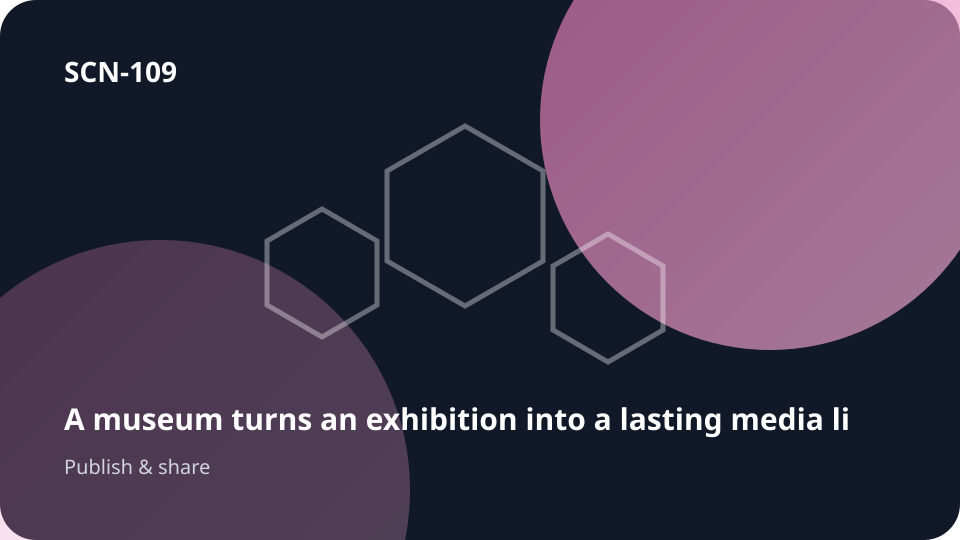

SCN-109 · Disseminate & Connect to the Public
A museum turns an exhibition into a durable media library
A museum turns an exhibition into a lasting media library. Knowledge needs to reach people beyond the original working group. Koali keeps the public explanation, learning resource or media object connected to its source knowledge, provenance and revisions while it is adapted for new audiences.

SCN-109 — A museum turns an exhibition into a durable media library
Universal pattern — Render a knowledge base as courses, video, audio, guides, libraries, or channels.
Pattern family — PAT-23 Turn knowledge into media or learning
Situation
A museum turns an exhibition into a durable media library. Knowledge needs to become a usable public or learning format—course, guide, video, audio, library, or channel—without becoming disconnected from its source.
What is usually lost
Once published, content often becomes detached from its sources, versions, and the people able to update it.
With Koali
Kristal keeps the relevant knowledge objects, sources, history, relationships, versions, and evidence connected. Konnaxion lets the relevant people discover one another, contribute context, learn, discuss, or co-create around those same objects. Orgo turns the resulting need, decision, or intervention into routed work with responsibilities, dependencies, evidence, and closure. UCKK can turn validated knowledge or experience into learning and multimedia dissemination for the appropriate audience.
Loop
exhibition → media → collections → publication → reuse
Usage palette
remember · teach-share · disseminate · learn
Component roles in this scenario
- Kristal ●●●●● — keeps the knowledge, provenance, relationships, and memory needed to understand the situation.
- Konnaxion ●●●○○ — connects the people who can add, challenge, teach, learn, or interpret the shared context.
- Orgo ●○○○○ — takes over when a check, decision, request, or intervention must become tracked work.
- UCKK ●●●●● — supports learning and multimedia dissemination when the knowledge must reach a broader audience.
What makes this characteristically Koali
The value is not any one isolated feature. It is preserving the same context across exhibition → … → reuse so knowledge, people, choices, work, and memory remain connected.
Transferable to
education · science · public-service
The domain changes; the pattern remains: Render a knowledge base as courses, video, audio, guides, libraries, or channels.
Canonical anchoring
Signature patterns: None assigned
Related possibility references:
POS-KNOW-004POS-KNOW-005POS-LEARN-001
These references support the architectural composition of the scenario; they do not by themselves validate the full scenario at runtime.
Status
COMPOSED · runtime UNVERIFIED
This scenario is an editorial use case grounded in the documented capability composition. Do not present it as a proven deployment without additional runtime evidence.